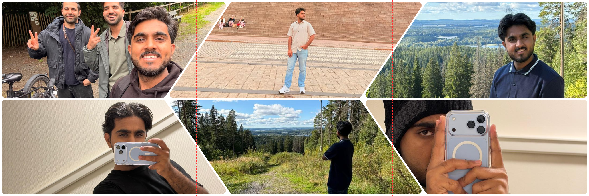
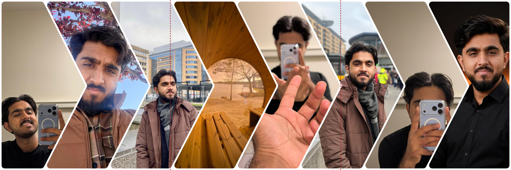

What about me?
UX & AI Researcher | Space & Service Designer
My background is in technology. My focus is on people.
I'm Haroon Ijaz, a UX & AI Researcher and Space & Service Designer based in Belgium.
My journey began with Computer Science and Artificial Intelligence, but my curiosity has always extended beyond technology itself.
I am interested in understanding how people think, how they experience spaces and services, and how technology can make everyday life better.
Today, I bring together AI, design research, and human-centred thinking to explore solutions that are meaningful for the people who use them.
It Started With Technology.
I studied Computer Science in Pakistan, where I developed a strong interest in Artificial Intelligence, Machine Learning, and Computer Vision.
During my bachelor's degree, I worked on an AI-based biker helmet detection system for my final-year project.
The motivation came from a real concern: road safety.
In places where motorcycle helmet use is inconsistent, accidents can lead to serious injuries. I wanted to explore how AI and computer vision could contribute to identifying helmet use and supporting safer roads.
For me, this project was not simply about training a model or building a technical system.
It was about exploring how technology could address a problem that affects people's lives.
"Technology became more meaningful when I started connecting it to human safety."
But What About the People?
As I continued exploring AI and Machine Learning, I started asking questions that went beyond technical performance.
Who are we designing for?
What do people actually need?
How do they experience the systems and services around them?
And how can we make those experiences better?
I realised that a technically advanced solution is not automatically a meaningful solution.
Understanding technology matters, but understanding people matters just as much.
That realisation encouraged me to explore human-centred design.
"Before asking what technology can do, I want to understand what people need."
From Building Systems to Understanding Experiences.
That curiosity brought me to Belgium, where I pursued postgraduate studies in Space & Service Design at Thomas More University of Applied Sciences.
It opened a new perspective for me.
I began learning how to understand people through research, observation, interviews, stakeholder mapping, journey mapping, and co-creation.
I explored how people experience physical environments, interact with services, and navigate everyday challenges.
The programme taught me that good design is not only about how something looks or functions.
It is also about understanding relationships, behaviours, needs, and the context in which experiences happen.
My Computer Science background taught me how to build systems.
Space & Service Design helped me understand which problems are worth solving and why.

Understanding Comes Before Designing.
I believe meaningful design begins with curiosity.
Before proposing a solution, I want to understand the people involved, the challenges they face, and the context in which those challenges exist.
Research helps us move beyond assumptions.
Listening helps us discover different perspectives.
Collaboration helps us connect ideas.
And technology helps us explore new possibilities.
For me, AI should support human understanding, not replace it.
The most valuable solutions are not always the most technically complex ones. They are the ones that genuinely improve people's experiences.
Understand
Learn about people and context.
Research
Explore needs, behaviours, and challenges.
Collaborate
Bring different perspectives together.
Design
Develop and visualise possible solutions.
Reflect
Learn, evaluate, and improve.
Two Worlds. One Human-Centred Approach.
My work brings together technical thinking and human-centred research.
My background in Computer Science helps me understand the possibilities of AI and digital systems.
My experience in Space & Service Design helps me explore whether those possibilities address real human needs.
UX & Design Research
Understanding people's needs, behaviours, challenges, and experiences through observations, interviews, user journeys, and research synthesis.
Space & Service Design
Exploring how people interact with environments, services, organisations, and touchpoints through stakeholder mapping, co-creation, service blueprints, and experience design.
Artificial Intelligence & Technology
Applying knowledge of Machine Learning, Computer Vision, and AI-supported tools to explore practical opportunities, support creative processes, and communicate complex ideas.
"I want technology and design to work together — not only to make systems smarter, but to make experiences better for people."
Different Challenges. One Human-Centred Perspective.
Across my academic and research projects, I have explored how technology, design, and research can respond to different human challenges.
Biker Helmet Enforcement
AI and Computer Vision project exploring helmet detection as a road-safety application.
AI-Supported Urban Co-Creation, Mechelen
Research exploring how AI-supported visualisation could help participants imagine, communicate, and discuss possible futures for an urban environment.
Patient Rights & Visibility, OPZ Geel
Service design exploration focused on making patient rights information more understandable, visible, and accessible in a mental healthcare environment.
Zilvermeer, IJsvogel
Service design project exploring off-season visitor experiences through stakeholder research, service strategy, spatial concepts, and group experience planning.
Curiosity Takes Me Beyond the Screen.
Outside my professional work, I enjoy discovering new places, exploring different environments, and observing how people live and interact.
Travel, photography, and everyday experiences give me new perspectives.
Sometimes inspiration comes from a conversation.
Sometimes from a public space, a city, or a quiet moment in nature.
These experiences remind me that understanding people does not happen only through formal research.
It also comes from being curious about the world around us.

Designing for People, With Technology.
My goal is to continue exploring the intersection of UX research, Artificial Intelligence, and service design.
I am particularly interested in how human-centred approaches and emerging technologies can improve wellbeing, healthcare experiences, accessible services, and everyday interactions.
I want to use AI not only to automate tasks or build intelligent systems, but also to help people understand challenges, communicate ideas, and explore better solutions.
At the same time, I want to keep asking the questions that matter most.
Who is this for?
What do they need?
And how will it improve their experience?
I do not see my future as being limited to computers, algorithms, or digital systems.
My focus is broader.
It includes people, their environments, their experiences, and their wellbeing.
"My scope is not limited to AI or computers. It includes people."
Let's Create Something Meaningful.
I'm interested in opportunities where research, technology, and human-centred design come together. Whether it's improving a digital experience, exploring an AI-supported service, or understanding a complex human challenge, I'd be happy to connect.